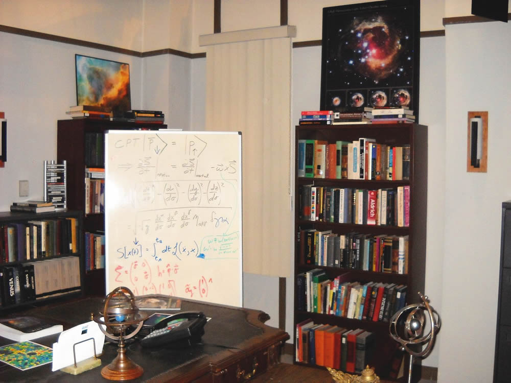

Barenaked Ladies, gruppo musicale alternative rock canadese, hanno composto l'omonimo tema musicale d'apertura di The Big Bang Theory. Nella clip finale sono presenti i cinque protagonisti intenti a mangiare intorno al tavolino del salotto di Leonard e Sheldon, con i due padroni di casa sul divano e Penny in mezzo e Raj e Howard seduti a terra. Nella prima stagione c'è un'immagine che viene cambiata all'inizio della seconda, in cui è evidente anche il cambiamento di alcuni oggetti della stanza. Dalla quinta stagione è stata cambiata con una più recente in cui solo Penny mangia e gli altri quattro stanno giocando a uno dei vari giochi di carte a cui giocano solitamente. Dal primo episodio della sesta stagione sono di nuovo tutti intenti a mangiare, ma ai cinque protagonisti vediamo aggiungersi Amy e Bernadette.

Le lavagne di Sheldon che si vedono nella serie rappresentano in ogni episodio un'equazione diversa. Le equazioni sono scritte tutte da David Saltzberg, professore di fisica e astronomia alla University of California di Los Angeles. Il professor Saltzberg provvede anche a scrivere i dialoghi che i personaggi effettuano sugli elementi legati alla fisica e all'astrofisica.


Il sito è stato creato per un esercizio nell' ambito del corso di Tecnologie Web e non rappresente quindi l aserie di The Big Bang Theory. I testi sono stati gentilmente presi in prestito da Wikipedia. Jacopo Fasolo - All Right Reserved